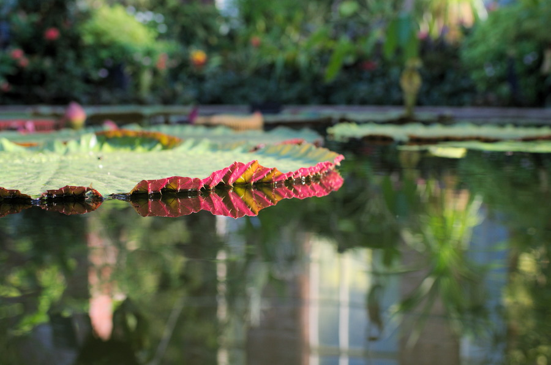
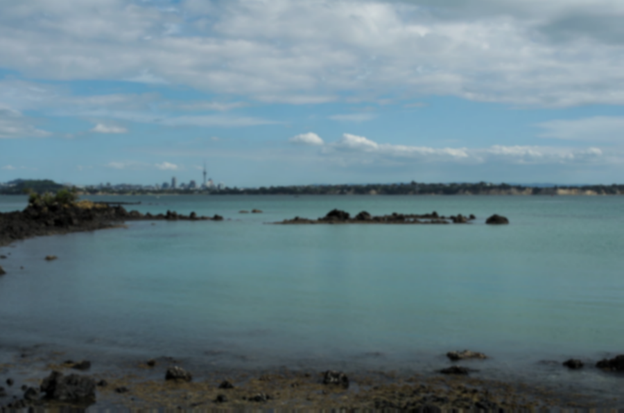

CSCI 5607 Homework 1 - Image Processing
This homework includes simple image processing functionality
Features
The following features are implemented:
- Brightness adjustment
- Contrast adjustment
- Channel extraction
- Random noise
- Saturation adjustment
- Image cropping
- Quantization
- Blur
- Edge detection
- Floyd-Steinberg Dithering
- Image scaling
- Image rotation
- Triangle wave nonlinear filter
- Insect eye nonlinear filter (nonphotorealistic)
Command Line Interface
The following command-line flags are supported:
-
--noise [factor] -
--brightness [factor] -
--contrast [factor] -
--saturation [factor] -
--crop [x] [y] [width] [height] -
--extract_channel [channel_num] -
--quantize [num_bits] -
--random_dither [num_bits] -
--blur [mask_size] -
--sharpen [mask_size] -
--edge_detect -
--FloydSteinbergDither [num_bits] -
--scale [sx] [sy] -
--rotate [angle] -
--fun [amplitude] [width] -
--nonphotorealistic [probability] [max_radius] -
--sampling [method_num]
Challenges
The most time-consuming challenges of this project have been:
- Rotation
- Resampling (mostly Bilinear)
- Nonphotorealistic filter
- Command line argument parsing
- Translating the original code into Rust
- Figuring out the proper way to apply the contrast filter
Rotation
Conceptually, rotation was a bit strange to think about for me. I had a hard time adjusting between the old and new coordinates, and it took a while for me to figure out where all the trigonometry fit in. Finally, after drawing several diagrams and reading the slides extensively, I was able to make it happen.
Resampling
Once I wrapped my head around the concept of mapping the old image coordinates onto the new image coordinates, I then tackled the image resampling problem. Initially for scaling and rotation, I just did point sampling due to its ease of implementation. However, it can produce pretty jagged results, which is why Bilinear and Gaussian sampling are preferred. I actually completed Gaussian sampling right after point sampling, because the method seemed more general and was a bit easier for me to wrap my head around. Once I was able to get this, Bilinear sampling wasn't too much more difficult to implement.
Nonphotorealistic filter
I'm not certain if the filter I implemented can actually be considered nonphotorealistic, because essentially it's just a distortion filter applied many times to small areas over an image, but I'm including it because I think it looks cool. The filter first distributes a bunch of random points throughout an image using a Poisson Disc sampling algorithm, then it creates a small distortion at a radius around each of those points. The result is something resembling a kaleidoscope, or what we imagine insects to see.
Command line argument parsing
Since I reimplemented the starter code in Rust, I also needed to redo the argument parsing. I took a slightly different approach and used a library (clap) to parse the arguments. It is quite convenient, but does not allow for iteration over the arguments in order, so I had to manually pull out all of the indices myself. All in all though, the argument parsing code is only about 100 lines of code versus the 300 from the original starter code (perhaps apples to oranges though, comparing Rust to C++).
Translating the original code into Rust
Since I reimplemented the original code in Rust, I thought I
could redesign it a bit too and make it more modular. For as
much as I've programmed in Rust, I haven't actually spent that
much time doing design - so needless to say I struggled a bit.
I ended up creating a trait
called Filter, which every filter implements. The
main function constructs an ordered list of filters from
command line arguments, and these can all be treated as
similar because they implement the Filter trait.
Figuring out the proper way to apply the contrast filter
I had a little trouble wrapping my head around what exactly contrast is doing; I had to draw out a little diagram for it to make full sense. I've created a contrast function before, but I was given the formula and didn't really understand what it was doing.
Implementation Details
This project is implemented in pure Rust.
The source code can be viewed on GitHub. A zip file for the check-in can be downloaded here. An executable (compiled for Linux x86_64) can be downloaded here. The compressed final source code and images can be downloaded here.
Automatically generated documentation (rustdocs) can also be found here.
The following libraries (crates) were used:
- rand (random number generation)
- image (only image reading and writing, even though this crate can actually do nearly all of the functions that this assignment requires)
- clap (argument parsing)
Images
Note: Leftmost images are the original images. All images are original content that hopefully "demonstrate an understanding of what each filter does."
Linear Filters
./hw1_5607 --input
docs/assets/img/in/queenstown.jpg --brightness 2.0 --output
docs/assets/img/out/brightness.png
./hw1_5607 --input
docs/assets/img/in/queenstown.jpg --noise 1.0 --output
docs/assets/img/out/noise.png
Contrast:
./hw1_5607 --input
docs/assets/img/in/tasman_waves.jpg --contrast 2.0 --output
docs/assets/img/out/contrast_hi.png
./hw1_5607 --input
docs/assets/img/in/tasman_waves.jpg --contrast 0.5 --output
docs/assets/img/out/contrast_lo.png

Saturation:
./hw1_5607 --input
docs/assets/img/in/wintergardent.jpg --saturation
2.0 --output
docs/assets/img/out/saturation_hi.png
./hw1_5607 --input
docs/assets/img/in/wintergardent.jpg --saturation
0.0 --output
docs/assets/img/out/saturation_lo.png
- 
Channel Extraction:
./hw1_5607 --input
docs/assets/img/in/crosswalk.jpg
--extract_channel 0 --output
docs/assets/img/out/extract_channel_r.png
./hw1_5607 --input
docs/assets/img/in/crosswalk.jpg
--extract_channel 2 --output
docs/assets/img/out/extract_channel_b.png
Dithering and Quantization
Quantize:
./hw1_5607 --input
docs/assets/img/in/raglan_sunset.jpg
--quantize 4 --output
docs/assets/img/out/quantize_4.png
./hw1_5607 --input
docs/assets/img/in/raglan_sunset.jpg
--quantize 1 --output
docs/assets/img/out/quantize_1.png
Random Dither:
./hw1_5607 --input
docs/assets/img/in/raglan_sunset.jpg
--random_dither 4 --output
docs/assets/img/out/random_dither_4.png
./hw1_5607 --input
docs/assets/img/in/raglan_sunset.jpg
--random_dither 1 --output
docs/assets/img/out/random_dither_1.png
Floyd-Steinberg Dither:
./hw1_5607 --input
docs/assets/img/in/raglan_sunset.jpg
--FloydSteinbergDither 4 --output
docs/assets/img/out/floyd_steinberg_4.png
./hw1_5607 --input
docs/assets/img/in/raglan_sunset.jpg
--FloydSteinbergDither 1 --output
docs/assets/img/out/floyd_steinberg_1.png
Convolution Filters
Blur:
./hw1_5607 --input
docs/assets/img/in/auckland.jpg
--blur 9 --output
docs/assets/img/out/blur_9.png
./hw1_5607 --input
docs/assets/img/in/auckland.jpg
--blur 9 --blur 9 --output
docs/assets/img/out/blur_9_9.png
- 
Sharpen:
./hw1_5607 --input
docs/assets/img/in/auckland.jpg
--sharpen 9 --output
docs/assets/img/out/sharpen_9.png
./hw1_5607 --input
docs/assets/img/in/auckland.jpg
--sharpen 9 --sharpen 9 --output
docs/assets/img/out/sharpen_9_9.png
Edge Detect:
./hw1_5607 --input
docs/assets/img/in/dunedin.jpg
--edge_detect --output
docs/assets/img/out/edge_detect.png
./hw1_5607 --input
docs/assets/img/in/dunedin.jpg
--blur 9 --blur 9
--edge_detect --output
docs/assets/img/out/edge_detect.png
Geometric and Sampling Filters
Crop:
./hw1_5607 --input
docs/assets/img/in/dunedin.jpg
--crop 316 92 115 115 --output
docs/assets/img/out/crop.png
Triangle wave distortion (fun):
./hw1_5607 --input
docs/assets/img/in/road.jpg
--fun 10 50
docs/assets/img/out/triangle_50_50.png
./hw1_5607 --input
docs/assets/img/in/road.jpg
--fun 40 200
docs/assets/img/out/triangle_other.png
Insect eye distortion (nonphotorealistic (?)):
./hw1_5607 --input
docs/assets/img/in/flower.jpg
--nonphotorealistic 1.0 50
docs/assets/img/out/insect_1.png
./hw1_5607 --input
docs/assets/img/in/flower.jpg
--nonphotorealistic 0.9 100
docs/assets/img/out/insect_2.png
Scale (original is 90x59 pixels; scaling up by a factor of 3):
./hw1_5607 --input
docs/assets/img/in/queenstown_small.png
--scale 3.0 3.0
--sampling 0
docs/assets/img/out/scale_point.png
./hw1_5607 --input
docs/assets/img/in/queenstown_small.png
--scale 3.0 3.0
--sampling 1
docs/assets/img/out/scale_bilinear.png
./hw1_5607 --input
docs/assets/img/in/queenstown_small.png
--scale 3.0 3.0
--sampling 2
docs/assets/img/out/scale_gaussian.png
Rotate:
./hw1_5607 --input
docs/assets/img/in/queenstown.jpg
--rotate 60
--sampling 0
docs/assets/img/out/rotate_point.png
./hw1_5607 --input
docs/assets/img/in/queenstown.jpg
--rotate 60
--sampling 1
docs/assets/img/out/rotate_bilinear.png
./hw1_5607 --input
docs/assets/img/in/queenstown.jpg
--rotate 60
--sampling 2
docs/assets/img/out/rotate_bilinear.png

Proof that operation chaining works:
./hw1_5607 --input
docs/assets/img/in/wintergardent.jpg
--saturation 3.0 --output
docs/assets/img/out/multi_1.png --fun 20
100 --output
docs/assets/img/out/multi_2.png --quantize
1 --output docs/assets/img/out/multi_3.png
--edge_detect --output
docs/assets/img/out/multi_4.png
--nonphotorealistic 1.0 75 --output
docs/assets/img/out/multi_5.png
-
Artistic submission!